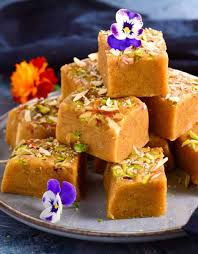

Gulab Jamun
ingredients
- sugar
- bread
- oil
Recipe
- Boil sugar and water to prepare syrup remove from fire. Add cardamom and keep aside to cool.
- In a mixing bowl put the flour, paneer, sooji, Nestlé MILKMAID, baking powder and baking soda. Mix gently to make a soft dough. Do not knead too much.
- Divide the mixture into 30-35 portions and gently roll into round gulab jamuns. Fry in the oil at very low flame till golden brown in color.
- Keep putting the fried gulab jamuns in the prepared sugar syrup. Once all the gulab jamuns are in the sugar syrup bring it to a boil and remove from flame.
- Serve warm.

Barfi
ingredients
- sugar
- Milk
- khoya
Recipe
- Make the milk powder dough.
- Grate the dough & heat some ghee.
- Cook the grated dough with cardamom.
- Garnish with silver varq & almonds before serving cut into small peices before serving.plate it with some namkeen
